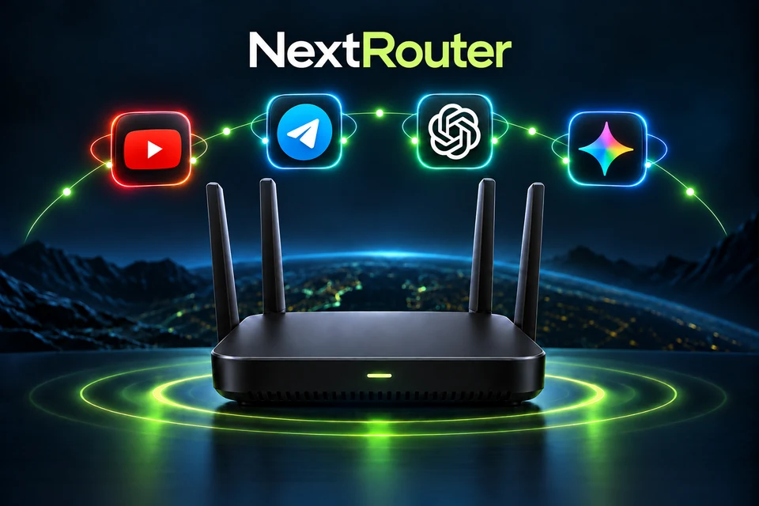

Управление с телефона
Меняйте локацию, проверяйте пинг серверов и запускайте диагностику в приложении NextRouter.
Роутер с настроенным VPN, который управляется с телефона. Подключите свои устройства — всё остальное мы уже сделали.

Не нужно разбираться в настройках.
Нужно просто пользоваться интернетом.
Меняйте локацию, проверяйте пинг серверов и запускайте диагностику в приложении NextRouter.
Физическая кнопка на роутере включает и отключает VPN. Быстро, когда это нужно прямо сейчас.
Устраняем неполадки и обновляем ПО удалённо. В большинстве случаев ваше участие не требуется.
Более 10 локаций. Мы поддерживаем подписку и обновляем её по мере необходимости.
Не открывайте настройки роутера каждый раз. Всё, что нужно для управления VPN, — на одном экране телефона.
Самый быстрый — автоматическиКаждые 30 секунд роутер проверяет все серверы в подписке на доступность и скорость и выбирает лучший.
Нужна постоянная локация?Выберите конкретный сервер вручную. Роутер сохранит ваш выбор и не будет автоматически менять локацию.
Пинг и диагностикаПроверяйте отклик серверов и состояние VPN прямо в приложении.
Нидерланды · Amsterdam
Интерактивная демонстрация интерфейса
Роутеры Netis с производительным процессором
и большим объёмом памяти.
Для тех, кому важна скорость Wi‑Fi. Класс AX3000: выше скорость беспроводного подключения, чем у N6v2. Без USB-порта.
Для тех, кому нужен USB. Wi‑Fi 6 класса AX1800 и порт USB 3.0 для дополнительных подключений. Процессор и память — как у NX31.
AX3000 и AX1800 — классы суммарной теоретической скорости Wi‑Fi, а не скорость VPN или интернета. Цены предварительные.
Бесплатный семейный тариф на целый год — до 5 устройств. Подключите телефоны близких и пользуйтесь VPN даже вне дома.
Подписка на AI-сервис в дополнение к вашему NextRouter.
Особые условия для жителей Республики Дагестан и Чеченской Республики.
50% стоимости сейчас, оставшиеся 50% — через месяц. Без банка и изменения цены.
Попробуйте роутер дома. Если передумаете в течение пробной недели — вернём полную стоимость.
Для устройств, подключённых к роутеру, VPN работает на самом роутере. Бесплатный семейный тариф на год позволяет подключить до 5 устройств и пользоваться VPN вне домашней сети.
Нажмите физическую кнопку VPN на роутере. Управлять VPN также можно в приложении NextRouter.
Обратитесь в поддержку NextRouter. Мы можем удалённо провести диагностику, устранить неполадки и обновить ПО роутера.
Эти дополнительные условия действуют для жителей Республики Дагестан и Чеченской Республики: полная стоимость возвращается, если вы передумаете в течение пробной недели, а рассрочка делит оплату на два платежа без банка.